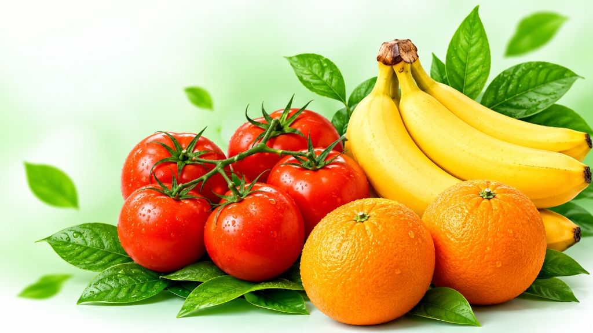

Smart analytics for longer-lasting,
higher quality fruits.

Manual visual inspection detects produce rot only after irreversible cellular decay and mold penetration have already taken place. In standard cold chain warehouses, this delayed diagnosis causes up to 30% of total fresh produce loss.
FreshTrack solves this by evaluating 4 non-destructive climate indicators: Temperature, Relative Humidity, Lighting Illuminance, and Carbon Dioxide through an ensemble Random Forest machine learning pipeline (100 Decision Trees).